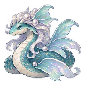
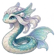

No.044
アマクモ
風 進化形
大気の川を渡る雲の竜。雨の匂いを遥か先まで運んでいく。
基本データ
| 図鑑番号 | No.044 |
|---|---|
| タイプ | 風タイプ |
| 進化 | ソラミからLv.22で進化 |
| 入手方法 | 風環島（Lv.43〜46）、暁の浅瀬道（Lv.54〜57）、蜃気楼のオアシス街（Lv.61〜64）、熔岩の地下宮（Lv.76〜79）、夕陽の岬（Lv.79〜82）の草むらに出現。 |
Lv.50の能力値
| 体力 | 293 | |
|---|---|---|
| 物理攻撃 | 175 | |
| 物理防御 | 120 | |
| 特殊攻撃 | 179 | |
| 特殊防御 | 118 | |
| 素早さ | 131 | |
| 命中 | 103 | |
| 回避 | 99 |
冒険中の能力値はレベルに応じて上がります。オンライン対戦の通常レンタルはLv.50で統一されます。
覚える技
| 技 | タイプ | 分類 | 威力 | 命中 | PP | 効果 |
|---|---|---|---|---|---|---|
| 天穹の円舞 | 風 | 特殊 | 44 | 90 | 10 | 風の力を解き放つ強力な特殊攻撃。10%で目眩にすることがある。 |
| 高空の弦 | 風 | 物理 | 33 | 96 | 15 | 風の力を込めた物理攻撃。威力と命中のバランスがよい。10%で目眩にすることがある。 |
| 翠の輪舞 | 芽 | 特殊 | 34 | 96 | 15 | 芽の力を込めた特殊攻撃。威力と命中のバランスがよい。10%で花毒にすることがある。 |
| 天穹の奔流 | 風 | 特殊 | 52 | 80 | 10 | 風の力をすべて注ぐ特殊攻撃。威力は最大級だが、命中がやや低い。10%で目眩にすることがある。 |
進化の系譜

ソラミLv.22 ▶- アマクモ
タイプ相性
風タイプの技は晶タイプに強く（1.5倍）、晶タイプの技を受けると効果が大きくなります。同じタイプの技を使うと威力が1.15倍になります。